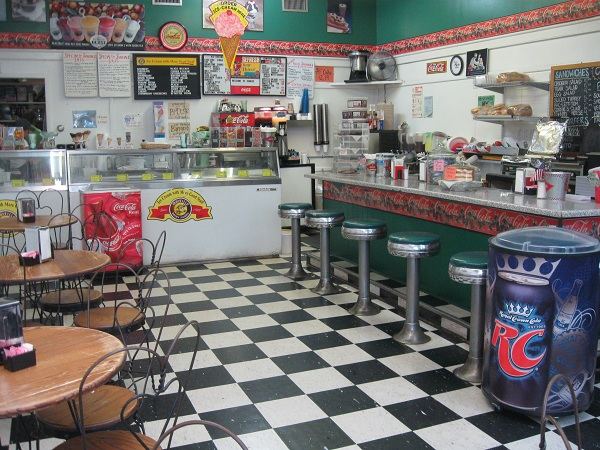

Welcome to Lit About Omar's!

Lit About Omar's started with humble beginnings in 2010.
The founder, Omar Ahmad, had just tapped into his hidden super-powers - ice cream making. With his newfound powers, he decided to use them for good, and create delicious ice cream for all. In a desperate attempt to stay hip with the slang of the times, he named his store - Lit About Omar's.
Store Hours
Mon. - Sun: 10am - 10pm
Contact and Location
214-LIT-OMAR
(214-548-6627)
300 N. Akard St. Dallas, TX